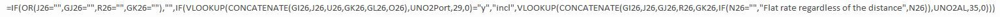
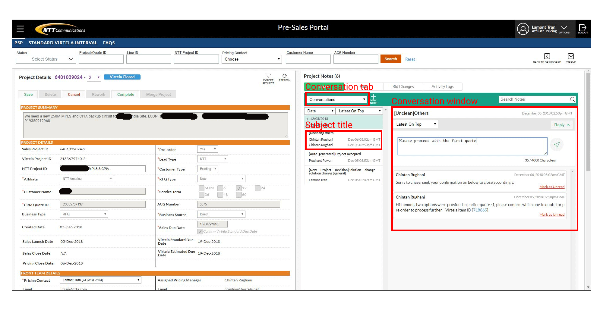

NTT Communication is a subsidiary of NTT, the largest telecom company in Japan. Products that I am involved in include network, datacenter, cloud, security, and various other IT products. Today, my role at the company involves designing & information architecting our internal CRM, work-flow design, building pricing and financial tools, building financial models, researching the market, and business development.
Project Type:
Company Projects
Team:
Lamont - Analyst, Information Architect, and UX Designer
Gen - Offer Management Director
Ankit - Pricing Director
Junko - Sales Order Management Director
Ralf - Project Management Director
Yasuki - Product Manager
Eri - Product Manager
Hiro - Network Engineer
Junji - Network Engineer
Suresh - Software Director
Richard - Developer Manager
Roda - Developer
Baraquio - Developer
Mojica - Developer
Pramjeet - Developer
Tools:
Paper + Pen
Microsoft Paint
Microsoft PowerPoint
Microsoft Excel
HTML
JavaScript
My role at the company began as an analyst for pricing, finance, and complex deals. It then expanded to being
a pricing architect; designing and building pricing tools that are used across the entire pricing team.
However less than a year after joining the company, our company went through a merge with another network
company called Virtela. During this merge, Virtela developed a new platform that was streamlined across
NTTCom. This new platform was how our global business units interfaced with Virtela’s product line. However,
during the time that the platform was being built, none of their developers and product managers consulted
with us. This caused the platform to have disastrous incompatibility & inefficiencies with our systems,
work-flow, resulting in poor user experience, and included countless of bugs and errors. Teams that were
impacted by this flawed system included analysts, engineers, sales, project managers, and service ordering
team.
My accomplishment for designing and building our pricing tools was embraced by management, and afterwards my
subsequent projects at NTT America became more design-intensive. Not long after, I was assigned to work with
the developers to re-design the platform and work-flow. Over the last 4 years this was an active role I was
involved in.
Since the platform was already implemented, making changes was incredibly challenging because it affected our
business flow in real-time. As my VP once pointed out, "We are changing parts on a moving plane". This
required me to carefully plan and anticipate how every change I made impacted other teams and the business
process. To overcome this challenge, I had to learn the entire work-flow of various other teams, identifying
their pain points, identify inefficiencies & incompatibility, and then communicating the re-design to the
developers and product manager.
Before I knew what UX design was, I also faced the challenge of presenting my designs. I had to get creative
in solving UX problems by using any tools available. I would draw and sketch ideas on paper and even redline
and annotate design requirements for the developers using 'Microsoft Paint'. I also had a strong background in
some coding languages (PHP, HTML, JavaScript, and SQL) so I also reviewed the developer’s code to help them
identify what was causing some of the bugs/errors/and performance issues. To communicate to management my
progress and recommendations for work-flow changes, I created PowerPoints for my presentations.
The design goal was to improve our business profitability by identifying and re-designing all the inefficient processes, tools, and systems.
In the past when our pricing team gathered cost inputs for some of our products, they had to manually search
through multiple pricelist file. The pricelist (see exhibit 1) has thousands of rows and with dozens of
columns. The pricing analyst has to match up the parameters that the sales and engineer request get the cost
of the product. Afterwards they will copy and paste the cost into document, search up another file for the
most recent tax and additional fee rate card, and then calculate the customer facing price. This process took
the pricing analyst anywhere from 3-10 minute per line item to get from cost to customer facing.
Exhibit 1. Pricelist: Confidential price section blacked out
However, what I quickly realized was that these manual steps that the pricing analyst took could be
replicated in formulas. What I created were multiple long if-statement functions (see exhibit 2) and
concatenated
them together to create a unique ID# (gray columns in exhibit 1). The if-statement function (exhibit 2) will
look
at all the values that the user entered and combine all the inputs together into a variable. This variable
would then automatically cross-reference with the unique ID I created in the pricelist (gray column in
exhibit 1). If the formula found a match between the variable and the unique ID from the pricelist, it will
automatically extract the pricing that the analyst needed.

Exhibit 2. The code.
After several iterations and feedback from all the pricing analysts on the team, I was able to find the most
efficient & minimalistic way to design the tool (exhibit 3) and still preserved all the functions of my code.
In the end, all the analyst had to type into the tool exactly what they wanted and the pricing will
auto-populate for them, add tax, add fees, calculate margin, and prepare the customer facing price. A work
that used to take 3-10min per line item now only took a few seconds to complete.
Exhibit 3. Pricing Tool: Price in example is arbitrary & for demonstration purpose only
For any network product that is not standardized into a pricelist we have to rely on a team at Virtela to
provide us the cost inputs for each of the components. The pricing process starts with an engineer validating
technical requirements to a pricing analyst that will later fill into an excel that we call the RFQ (request
for quote). Afterwards the analyst logs into the Pre-Sales Portal; the internal CRM system that Virtela
created. This system is how the analyst communicates with the Virtela’s team across the globe. The analyst
will then upload the RFQ into the portal which will then transfer all the data of the requests into to the
system. From that point on, the RFQ is no longer need since the system allows the user to modify and adjust
the technical requirements. See below for the user flow.
My role was to work with the product managers in Japan to manage the information architect between the RFQ
and Pre-Sales Portal. Every time we have new product or modification, the RFQ would need to be updated and
then coordinated with the developers for an update. We also had to do usability testing with other teams from
our sister companies around the globe to ensure the RFQ and system are also compatible with their work-flow
and system. If there was incompatibility, we had to go back to the product manager and find an alternative
solution. An example would be to re-bundle certain product into a new product code in the drop-down menu so
that the revised product code is consistent across multiple systems.
Almost all of the analysts that we work with from Virtela are overseas. Typically, when a request goes into
the Pre-Sales Portal, it will get filtered down to one of hundreds of analysts around the world and sometimes
these projects will get passed from one individual to the next at Virtela. This created a problem for
engineers and project managers later if a conversation was not digitally recorded.
To solve this problem, Virtela came up with an outlook notification message that gets sent to us every time
one of the pricing analyst overseas sent us a message. However, this messaging method was incredibly
inefficient for two reasons. First, the notification would get clumped into one huge text file. This made it
very difficult to read when we had complex designs that had paragraphs of details. Second, the messages did
not contain any of the history of the chat; each message they sent came in as a separate email notification.
This required anyone viewing the messages to manually dig out all the previous notifications to see the
conversation history.
My solution was for the developers to add HTML tags into the notification so that when outlook views the
message, the message would be organized. I also worked with the developers to include the entire conversation
history in each of the notifications.
After resolving the issue with the outlook, we started realizing that outlook was not the best way to capture
the technical requirements because the customer’s request was changing so rapidly. Since outlook
notifications did not show the user a complete overview of what is going on, responses caused errors to
happen frequently. What I came up with was to implement a chat system directly into the Post-Sales Portal.
This enabled the user and Virtela to identify specific line items in the system they are inquiring about.
This started with a quick wireframe in Microsoft paint and the developers soon updated this feature into the
Pre-Sales Portal. This allowed the user to quickly respond to the Virtela team with accuracy and improved
resource since the user did not have to jump between two systems at the same time.
Microsoft Paint Wireframe

Updated Pre-Sales Portal